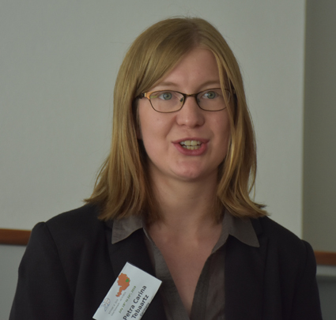
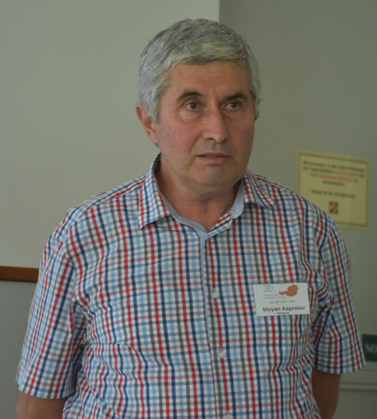

PHOTO GALLERY FROM WFNMC-08, Graz, Austria
Here are some photos of the site, speakers and general shots.
![[Bin Xiong]](wfnmc201831.jpg)
ErdösAward presented to Bin Xiong (China). From left Maria Falk de Losada (Chair Awards Committee), Bin Xiong,
Alexander Soifer (WFNMC President)
ErdösAward presented to Carlos Gustavo Moreira (Brazil). From left Maria Falk de Losada (Chair Awards Committee), Carlos Gustavo Moreira,
Alexander Soifer (WFNMC President)
This is the Conference site, Hotel Trattenhof, Semriach, near Graz, Austria.
Here is the group at the clock tower, Graz, on Excursion.
Download full res version (8.4Mb) here. (Not working on all systems.)
Robert Geretschlaeger, Chair of the Conference Organising Committee, introduces the section "Work with Students and Teachers".
Later in the conference Robert spoke again on balls and pyramids in the section on creating problems and problem solving.
Clemens Heuberger, a former Austrian IMO student now a full Professor at the University of Klagenfurt, gives the Plenary Lecture on
the Lifting-the-Exponent Lemma and Elliptic Curves.
Jaroslav Svrcek (Czech Republic) describes four independent solutions to the same recent Olympiad problem.
![[Svetlana and Iliana]](wfnmc201806.jpg)
Svetlana Goranova and Iliana Tsvetkova (Bulgaria) present their work on challenges for young children.

Petra Carina Tebaartz (Germany) presents her work on student proficiency in making proofs.
Hidetoshi Fukagawa (Japan), well known for his work on the Japanese Temple Problems, discusses SANGAKU traditional Japanese mathematics.
Past President of WFNMC Maria Falk de Losada (Colombia) introduces the section "Competitions around the World", and describes
the compelling effects Olympiads have had on mathematics, mathematicians, students and her own career, not only around
the world but with particular illustrations from the effects in Colombia.
Later in the Conference Maria spoke of the situation in Venezuela, with a positive tone on the progress of
mathematics despite difficulties in the country.
Dimitrij Nikolenkov (Switzerland) describes challenges which he has developed in Switzerland.
![[Clapper]](wfnmc201811.jpg)
Mike Clapper (Australia) describes the activities of the Australian Mathematics Trust.
David Crawford (UK) discusses the Team Mathematics Competition in the United Kingdom.
Bettina Kreuzer and Eric Fuchs (Germany) discuss the N�boj competition, which originated in Bratislava, Slovakia.
Shafie Shokrani (Iran) talks of the Isfahan Mathematics House's experience in participating in the modelling competition
run by the Freudenthal Institute at Utrecht University, Netherlands.
Maria Losada (Colombia) talks about the 10 years of the Iberian mathematics competition for University students.

Stoyan Kapralov (Bulgaria) discusses the Compmath Competition, solving mathematics problems
with computer algebra systems.
For the first time ever at a WFNMC Conference there is a skype presentation, and it is very successful.
Yahya Tabesh (Iran), speaking from California, talks of a new computational thinking contest.
Mark Saul (USA) discusses the new Julia Robinson Mathematics Festival.
President of WFNMC Alexander Soifer (USA) introduces the section "Building Bridges between Problems of Mathematcal Research
and Competitions". He went on to give some remarkable updates, even this year, on narrowing down the chromatic number
in the plane, which does not damage his conjecture that in n-space the result will be one less than 2 to the power (n+1).
Later in the Conference Alexander discussed the flavour of the Colorado Mathematical Olympiad.
Past President of WFNMC Peter Taylor (Australia), photo courtesy of Isabella Losada, speaks on practical cases where work by
problems committees designing questions for school students has led to refereed papers advancing knowledge, and conversely
where completely abstract results in pure mathematics have been unpacked to problems in the real world for high school students.
Sergey Dorichenko (Russia) describes the procedures at Summer Conferences of the International Mathematics Tournemnt of Towns.
Krzysztof Ciesielski (Poland) discusses some of his favourite problems from the Polish Mathematical Olympiad.
Later in the Conference Krysztof spoke again in the section on creating problems and problem solving.
Senior Vice President of WFNMC Kiril Bankov (Bulgaria) discusses some geometric problems with inversions on lines and circles.
Later in the conference Kiril introduces the section "Creating Problems and Problem Solving".
Borislav Lazarov (Bulgaria) convenes a workshop on special issues with setting multiple choice exams.
Marcin Kuczma (Poland) discusses functional equations.
Christian Dorner (Austria) discusses the mathematics of flags.
Romualdas Kasuba (Lithuania) (above) and Edmundas Mazetis (Lithuania) (below) discuss various issues around problem solving.
China has sent this strong delegation in support of Bin Xiong (front centre) winning an Erdös Award. Andy Liu (Canada) on his
left is an honorary member of the party.
Andy Liu (Canada) arrives ahead of Sergey Dorichenko (Russia) for lunch on the excursion day on Sch�ckl Mountain, overlooking Graz.
Chair of Organising Committee, Robert Geretschlaeger, offers a blackboard to those presenters who have requested one.
|


{kind=link}